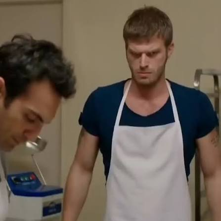

9.8.2026
ALIBEY PİDESİ SKANDALI

ALIBEY PİDESİ SKANDALI
Pornstar Martini’nin isim haklarının sahibi, ünlü moda kişiliği Salim Sinan Tuncer, Hürriyet Mahallesi’nin ikonik mekânlarından Salon Figaro Düğün Salonu’ndan çıkarken görüntülendi. “Allston Boğası” lakabıyla da tanınan yakın dostu O.E.’nin dünya evine girmesinden dolayı dört köşe olduğu gözlenen Tuncer, Allston Son Dakika kameralarına konuştu.
FEVKALADE BİR DÜĞÜN
Düğün salonunun çıkışında kısa bir değerlendirmede bulunan Tuncer, organizasyondan duyduğu memnuniyeti şu sözlerle dile getirdi:
“Gerçekten harikakulade bir resepsiyon yapmışlar. Mutlulukları daim olsun, Allah bir yastıkta kocasın.”
Tuncer’in açıklamalarının ardından olayların seyrinin değiştiği öğrenildi. Edinilen bilgilere göre Bay Tuncer, salon içerisinde yaşanan bir tartışmanın hemen ardından ortalıktan kayboldu.
İddialara göre resepsiyonda servis edilen ana yemek olarak sunulan “Alibey Pidesi”, gece boyunca erkek ve kız tarafları arasındaki anlaşmazlığın merkezinde yer aldı. Yemeğin ismindeki “Alibey” ibaresinin kimliği belirsiz bir kişiye atıfta bulunması üzerine kız tarafınca yöneltilen, “Ali kim *m*na k*y*y*m” sorusuna Bay Tuncer’in “Şehirlerarasıotobüsterminaliocza” demesi tartışmayı alevlendirdi.
AKRABALAR SİNİRLENDİ, PİDELER SOĞUDU
Olayın ardından salonda kısa süreli bir sessizlik yaşandığı, ancak Tuncer’in açıklamasının ardından özellikle kız tarafına mensup bazı akrabaların sinirlerinin bozulduğu bildirildi.
“Bunlara kız mız veren namerttir” diyen kız tarafını yatıştırmaya çalışan erkek tarafı, olayın hemen ardından Bay Tuncer’i bulmaya çalışıp konuya bir açıklık getirmeye çabaladı ancak, konuyla ilgili görgü tanıkları Tuncer’in söz konusu cevabı verdikten sonra sırra kadem bastığını belirtti.
Olayın ardından Alibey Pidesi’nin servis edilip edilmemesi konusunda taraflar arasında yeni bir görüş ayrılığı yaşanıp yaşanmadığı ise henüz bilinmiyor.
Allston Son Dakika olarak gelişmeleri takip ediyoruz, bizi takipte kalın.